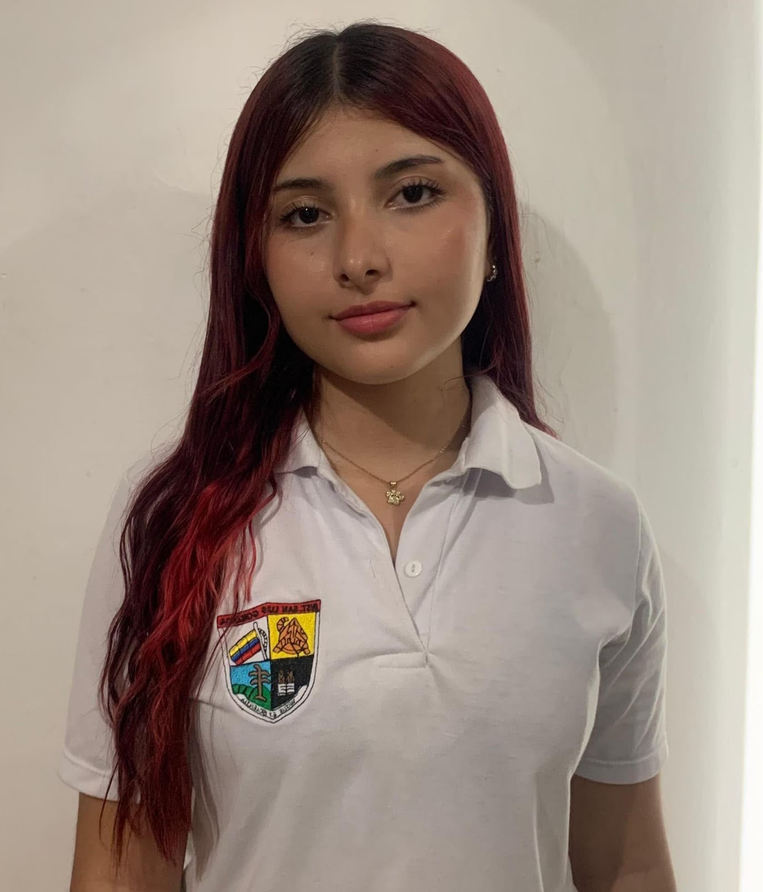

Ashley Eloisa Rivera Maya
Lider de proyecto y programadora
Soy Eloisa, estudiante próxima a graduarme de la Institución Educativa San Luis Gonzaga. Me considero una persona creativa, responsable y comprometida, con interés por aprender cosas nuevas y desarrollar mis habilidades a través de diferentes proyectos. A lo largo de mi formación, he desarrollado sólidas capacidades que me han permitido crecer como aprendiz y como persona. Disfruto de los tiempos tranquilos, donde puedo concentrarme, aprender y crear. Soy una persona animosa, comprometida y siempre dispuesta a dar lo mejor de mí para salir adelante.